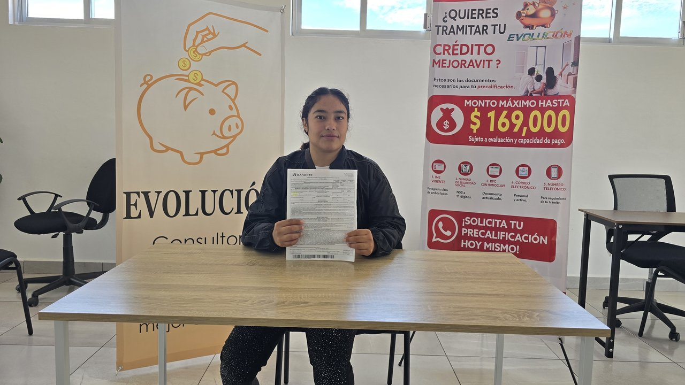

Albis acudió a EvoluciónBS para tramitar su retiro parcial por desempleo de AFORE. Gracias a la orientación y acompañamiento de nuestro equipo, pudo completar su proceso de forma clara y sin complicaciones, y hoy comparte su experiencia satisfecha con el servicio recibido.
Albis Galicia

Carime acudió a EvoluciónBS para tramitar su ayuda por desempleo. Quedó muy a gusto con la atención y el acompañamiento durante todo su trámite, y recomienda ampliamente a la consultoría.
Carime Hernández
Norberto Iván tramitó su ayuda por desempleo de AFORE con EvoluciónBS. Destaca la orientación clara y el acompañamiento cercano que recibió durante todo el proceso, y quedó satisfecho con el resultado.
Norberto Iván
Bárbara Yessenia también tramitó su ayuda por desempleo con nosotros y quedó encantada con la atención recibida. Ella misma lo dice: si aún no has hecho tu trámite, ¿qué esperas para empezar el tuyo?
Bárbara Yessenia